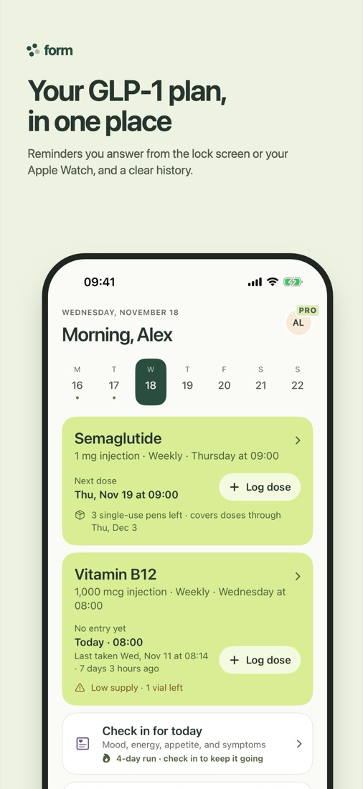
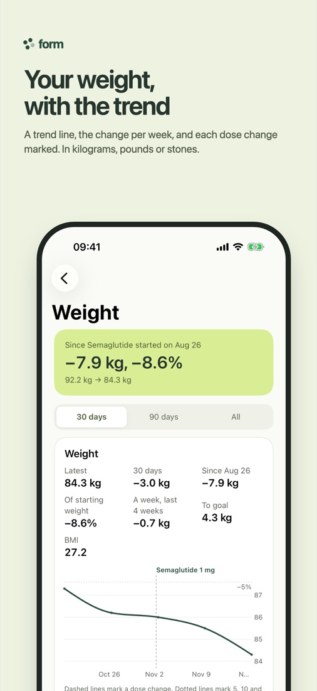
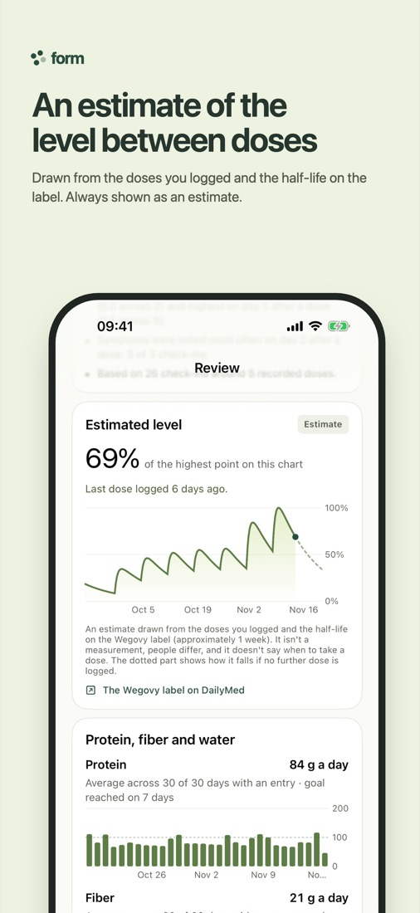

Form
Form is an iPhone app for keeping a personal record of a prescribed GLP-1 medicine or peptide treatment, and sharing that record with your clinician.



What Form does
- Logs each dose as taken or skipped, for GLP-1 medicines such as semaglutide and tirzepatide, and for other peptides. Reminders can be answered from the lock screen, a widget or an Apple Watch.
- Daily check-ins: mood, energy on a scale of 1 to 10, appetite, symptoms and notes.
- Weight with a trend line, the change per week and each dose change marked, in kilograms, pounds or stones and pounds, and other measurements. With your permission, Form can read from and save to Apple Health.
- An estimated level between doses, for brand medicines, drawn from the doses you logged and the half-life on the medicine’s label. It is always shown as an estimate.
- What your medicine’s label says about missed doses, changing your dose day, storage and dose steps, in the label’s own words.
- Reviews of your own records: this week and month against the period before, before and after a dose change, and each symptom by name.
- Past doses and weights imported from a spreadsheet, or from the medications you choose in Apple Health.
- Lab results you type in, with an optional photo or PDF of the report. Form shows the range printed by the lab.
- Supplies and refills, appointments, and questions to ask your clinician.
- Reminders you set up yourself, for doses, refills, appointments and a daily check-in.
- A library of 43 medicine and peptide profiles, free to read without a membership. Each one summarizes regulatory status and published evidence, links to official sources such as FDA labels, the EMA, WADA and published studies, and shows when it was last reviewed.
- A visit report, as a PDF or plain text, that you can share with your clinician.
Form Pro membership
Form is used with a Form Pro membership: a monthly or annual subscription, or a one-time lifetime purchase. The annual plan starts with a 2-week free trial for eligible new subscribers. The app shows the price before you set anything up, the medicine library is free, and you can look around with sample records before you start. If your membership ends, your records stay on your iPhone, you can still export them, and reminders for your planned doses keep working. Prices and billing terms are in the Terms of Use.
What Form doesn’t do
- It doesn’t recommend or calculate doses, and it doesn’t do reconstitution math. The estimated level chart shows no amounts and gives no guidance on dosing or timing.
- It doesn’t give treatment advice or diagnose anything.
- It doesn’t interpret lab results. It shows the lab’s printed range only.
- It doesn’t sell medicines or peptides, or link to anyone who does.
- It doesn’t use AI.
- It has no ads and no accounts. You don’t sign in.
Intended purpose
Form is intended for adults to keep a personal record of treatment their clinician prescribed, schedule reminders they set up themselves, read general educational information, and share their own records with their clinician.
It is not a medical device. It is not intended to diagnose, treat, cure, mitigate or prevent any disease, to calculate or recommend doses, or to interpret lab results. It is not for emergencies. In an emergency, contact local emergency services.
Your data
Your records are stored only on your iPhone. They are never sent to us. Usage analytics is off unless you turn it on, and never includes medicine names, doses, symptoms, notes, measurements, lab values or Apple Health data.
Read the Privacy Policy and the Consumer Health Data Privacy Policy.
Help and policies
- Support, including backups, Apple Health, reminders and subscriptions
- Privacy Policy
- Consumer Health Data Privacy Policy
- Terms of Use
Questions: victordov@gmail.com
Brand names such as Ozempic, Wegovy, Rybelsus, Mounjaro, Zepbound and Saxenda are trademarks of their owners. Form is not affiliated with, endorsed or sponsored by Novo Nordisk, Eli Lilly or any other drug maker.